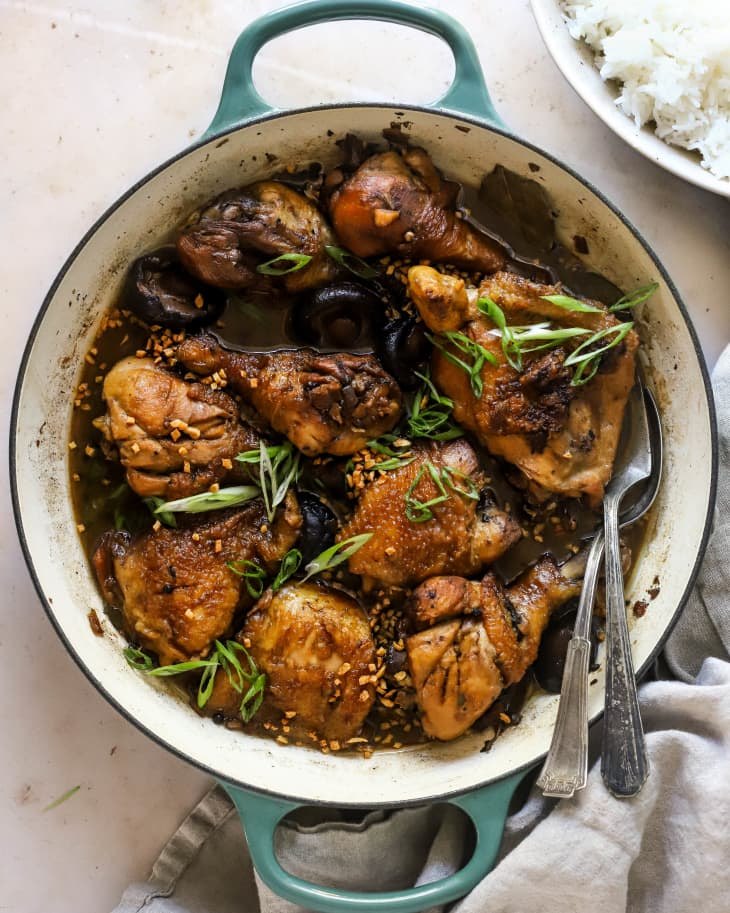

Shin Ramen Fried Rice

Quintessential filipino dish made with simple ingredients. Stewed chicken in vinegar and soy sauce.
Ingredients:
- 2 lbs chicken
- 3 pieces dried bay leaves
- 8 tbsp soy sauce
- 4 tbsp white vinegar
- 5 cloves garlic
- 1 1/2 cups of water
- 3 tbsp cooking oil
- 1 tsp sugar
- 1/4 tsp salt
- 1 tsp whole peppercorn
Cooking Instructions:
- Combine Chicken, soy sauce, and garlic in a large bowl. Mix well. Marinate the chicken for at least an hour. Overnight works too.
- Heat a cooking pot. Add cooking oil.
- When oil is hot, pan fry the marinated chicken for 2 minutes per side.
- Pour0in the remaining marinade, garlic included. Add water and bring to a boil.
- Add dried bay leaves and whole peppercorn. Simmer for 30 minute or until chicken is tender.
- Add vinegar. Stir and reduce the sauce.
- Add sugar and salt to taste.
- Serve hot and enjoy!